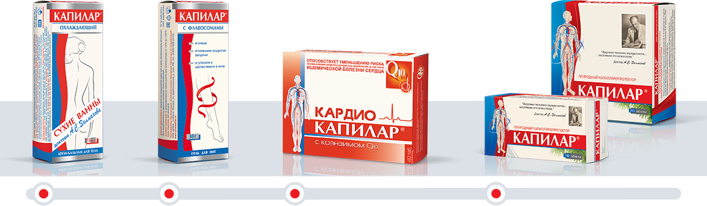
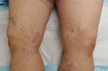
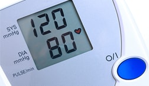
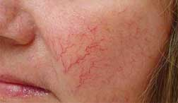

Препараты линии КАПИЛАР созданы на основе учения кремлевского врача А.С. Залманова. Основное действующие вещество всех препаратов – дигидрокверцетин. Это уникальный природный биофлавоноид выделенный из древесины сибирской лиственницы. Дигидрокверцетин – эталонный антиоксидант, один из наиболее эффективных капилляропротекторов. Он способствует улучшению микроциркуляции крови, воздействуя на эластичность и стабильность сосудистой стенки.
Линия КАПИЛАР
В линию препаратов КАПИЛАР входят наружные и внутренние формы. Гель и крем-бальзам КАПИЛАР применяется при варикозном расширении вен и венозной недостаточности. Таблетки линии КАПИЛАР незаменимы в комплексном лечении ишемической болезни сердца, стенокардии, гипертонии. Регулярный прием таблеток КАПИЛАР существенно повышает эффективность программ реабилитации после инфарктов и инсультов.

КАПИЛАР
крем-бальзам для тела
крем-бальзам для тела
КАПИЛАР
гель для ног с флавосомами
гель для ног с флавосомами
КАРДИО КАПИЛАР
с коэнзимом Q10 таблетки
с коэнзимом Q10 таблетки
КАПИЛАР
таблетки
таблетки
Действие КАПИЛАР на организм
Мозг
Нормализует мозговое кровообращение. Снижает риск развития функциональных нарушений головного мозга. Улучшает память, внимание, продлевает социально активный период жизни. Повышает умственную работоспособность. Рекомендован к включению в программы реабилитации после инсульта
Сердце
Улучшает функциональное состояние сердечно-сосудистой системы, повышает физическую выносливость миокарда. Уменьшает количество приступов стенокардии. Предотвращает скачки артериального давления, способствует снижению уровня холестерина. Рекомендован к включению в программы реабилитации после инфаркта.
Вены и сосуды
Восстанавливает микроциркуляцию крови во всем организме, укрепляет стенки кровеносных сосудов, снижает
проницаемость капилляров. Улучшает реологию крови, снижает застойные явления в сосудах, в том числе в
венозном русле. Рекомендован при атеросклерозе и венозной недостаточности.
Легкие
Восстанавливает работу легочных альвеол. Расправляет легкие, увеличивает их объем, очищает от «
табачного нагара»
. Улучшает показатели бронхиальной проходимости, снимает отечность бронхов. Способствует лучшему выведению мокроты. Рекомендован к включению в программу лечения хронической обструктивной болезни легких и кашля курильщика.
КАПИЛАР – лидер по количеству
клинических исследований
- Препараты линии КАПИЛАР прошли более 300 исследований в различных клинических научно-исследовательских институтах России.
- На основе клинических исследований препаратов линии КАПИЛАР защищено 2 диссертации.
- Написано учебно-методическое пособие по применению КАПИЛАР в комплексной реабилитации больных с заболеваниями внутренних органов для терапевтов, кардиологов, специалистов восстановительной медицины лечебно-профилактических и санаторно-курортных учреждений, а также слушателей, обучающихся в циклах усовершенствования по курортологии и медицинской реабилитации.
Доказанная эффективность
ПРИ ЗАБОЛЕВАНИЯХ СЕРДЕЧНО-СОСУДИСТОЙ СИСТЕМЫ
в 2 раза
снижает количество приступов стенокардии, уменьшая потребность в нитроглицерине
улучшает переносимость физической нагрузки
ускоряет процесс восстановления после перенесенного инфаркта, инсульта
на 60%
снижает количество осложнений в постинфарктном периоде
на 26%
снижает содержание в крови общего холестерина
ПРИ БОЛЕЗНЯХ ЛЕГКИХ
- при острых пневмониях увеличивает показатели вентиляционной функции легких, способствует сохранению капиллярной сетки в легких
- при обструктивных хронических бронхитах улучшает биомеханику дыхания, снижает степень обструкции во всех отделах бронхиального дерева
- при бронхиальной астме уменьшает частоту приступов и количество мокроты, улучшает показатели поток/объем и бронхиальной проходимости
ПРИ НАРУШЕНИИ МОЗГОВОГО КРОВООБРАЩЕНИЯ
у 41% пациентов
- уменьшалась частота случаев нарушений координации движений
у 52% пациентов
- снизилась частота возникновения головных болей и головокружений
у 67% пациентов
- увеличился объем оперативной памяти
ПРИ ЗАБОЛЕВАНИЯХ ГЛАЗ
- снижает риск развития отеков и кровоизлияний в тканях глаз
- ускоряет процессы восстановления поврежденных тканей глаз
- укрепляет мышцы и связки глаз, улучшает проводимость зрительного нерва
- повышает остроту зрения при возрастных нарушениях
ПРИ ХРОНИЧЕСКИХ ОБЛИТЕРИРУЮЩИХ ЗАБОЛЕВАНИЯХ НИЖНИХ КОНЕЧНОСТЕЙ
в 2 раза
увеличивает дистанцию безболевой ходьбы
на 30%
уменьшает интенсивность боли
Достоверное улучшение состояния МАКРОГЕМОДИНАМИКИ
ПРИ САХАРНОМ ДИАБЕТЕ II типа
- повышает чувствительность клеток к инсулину
- снижает риск прогрессирования диабетических ангиопатий и ретинопатий
- улучшает микроциркуляцию с повышением резервных возможностей капиллярного русла
- уменьшает трофические нарушения
Статьи
Все статьи
Укротители гипертонии
12.01.2017
История медицины полна драматизма. Это относиться и к новым революционным технологиям лечения, и к судьбам людей, взявших на себя смелость их выдвинуть. Один из таких людей – доктор Залманов. Для Запада он стал автором знаменитейших «ванн Залманова». Для нас на долгие годы – бросившим Родину невозвращенцем.
Варикозная болезнь, причины, лечение

28.12.2016
Варикозом называют болезнь, при которой ослабляется эластичность стенок вен, что приводит к их растягиванию. В некоторых участках образуются расширения, напоминающие узлы, именно это и дало название болезни - «varix» с латыни переводится как «узел».
Отеки ног, причины и лечение
28.12.2016
У каждого человека хотя бы раз в жизни возникали отеки ног. Причиной этого явления у здоровых людей могут быть физические перегрузки или ношение неудобной обуви пережимающей кровеносные сосуды ног.
Варикозное расширение вен и беременность
09.11.2016
О том, что нужно предпринять, чтобы предотвратить или уменьшить последствия варикозного расширения вен во время беременности, читайте здесь...
Это интересно
Все статьи
Просто вода
 25.10.2016
В большом 6 – летнем исследовании с участием 30391 здоровых людей обнаружено, что при употреблении 5 и более стаканов простой воды в день уменьшалась вероятность сердечного приступа на 51%.
25.10.2016
В большом 6 – летнем исследовании с участием 30391 здоровых людей обнаружено, что при употреблении 5 и более стаканов простой воды в день уменьшалась вероятность сердечного приступа на 51%.
25.10.2016
В большом 6 – летнем исследовании с участием 30391 здоровых людей обнаружено, что при употреблении 5 и более стаканов простой воды в день уменьшалась вероятность сердечного приступа на 51%.
Опасно ли повышение давления

17.10.2016
У здорового человека есть довольно большой запас прочности по артериальному давлению. Даже если оно повысится со 120 до 150 мм рт. ст. – ничего страшного,
Почему зимой мерзнут руки
11.10.2016
Одной из основных причин замерзания рук зимой является, слабое кровообращение. В осенне-зимний период температура понижается, что вызывает спазмы и застои крови капиллярах.
Лопнувшие сосуды

04.10.2016
Обладательницы чувствительной кожи не понаслышке знают о проблеме лопнувших сосудиков или куперозе. При этом недуге любые перепады температуры – холод или жара способны ухудшить ситуацию.